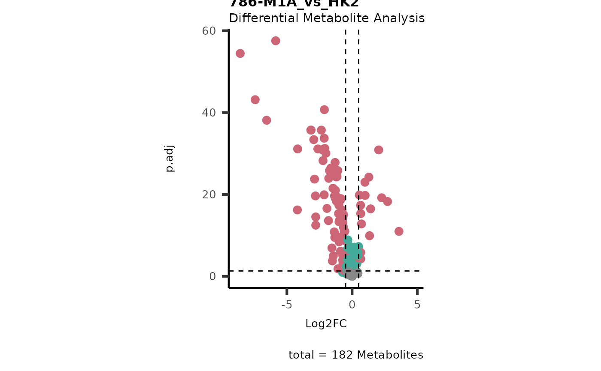
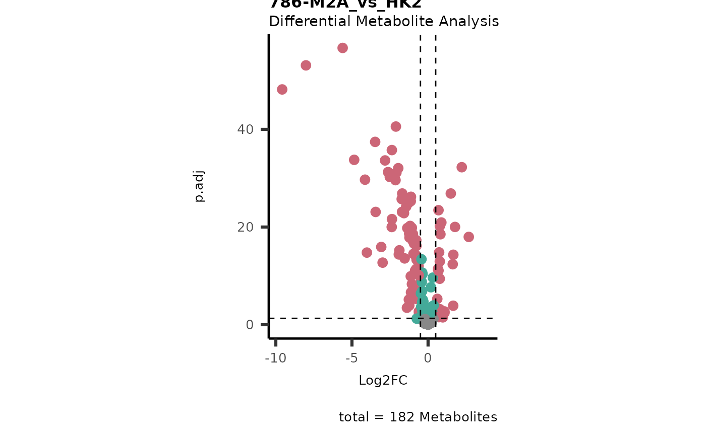
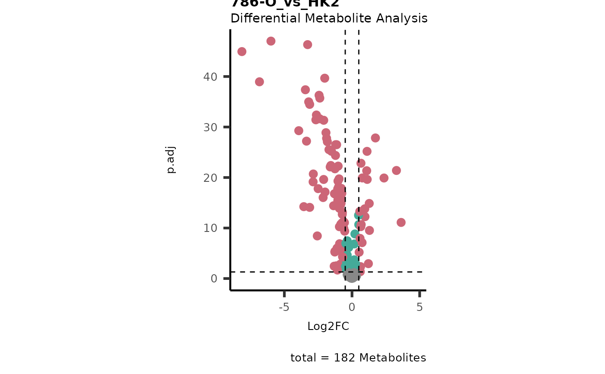

This function allows you to perform differential metabolite analysis to obtain a Log2FC, pval, padj and tval comparing two or multiple conditions.
Source:R/DifferentialMetaboliteAnalysis.R
dma.RdThis function allows you to perform differential metabolite analysis to obtain a Log2FC, pval, padj and tval comparing two or multiple conditions.
Usage
dma(
data,
metadata_sample,
metadata_info = c(Conditions = "Conditions", Numerator = NULL, Denominator = NULL),
pval = "lmFit",
padj = "fdr",
metadata_feature = NULL,
core = FALSE,
vst = FALSE,
shapiro = TRUE,
bartlett = TRUE,
transform = TRUE,
save_plot = "svg",
save_table = "csv",
print_plot = TRUE,
path = NULL
)Arguments
- data
DF with unique sample identifiers as row names and metabolite numerical values in columns with metabolite identifiers as column names. Use NA for metabolites that were not detected.
- metadata_sample
DF which contains metadata information about the samples, which will be combined with your input data based on the unique sample identifiers used as rownames.
- metadata_info
Optional: Named vector including the information about the conditions column information on numerator or denominator c(Conditions="ColumnName_SettingsFile", Numerator = "ColumnName_SettingsFile", Denominator = "ColumnName_SettingsFile"). Denominator and Numerator will specify which comparison(s) will be done (one-vs-one, all-vs-one, all-vs-all), e.g. Denominator=NULL and Numerator =NULL selects all the condition and performs multiple comparison all-vs-all. Log2FC are obtained by dividing the numerator by the denominator, thus positive Log2FC values mean higher expression in the numerator. Default = c(conditions="Conditions", numerator = NULL, denumerator = NULL)
- pval
Optional: String which contains an abbreviation of the selected test to calculate p.value. For one-vs-one comparisons choose t.test, wilcox.test, "chisq.test", "cor.test" or lmFit (=limma), for one-vs-all or all-vs-all comparison choose aov (=anova), welch(=welch anova), kruskal.test or lmFit (=limma) Default = "lmFit"
- padj
Optional: String which contains an abbreviation of the selected p.adjusted test for p.value correction for multiple Hypothesis testing. Search: ?p.adjust for more methods:"BH", "fdr", "bonferroni", "holm", etc.Default = "fdr"
- metadata_feature
Optional: DF which contains the metadata information , i.e. pathway information, retention time,..., for each metabolite. The row names must match the metabolite names in the columns of the data. Default = NULL
- core
Optional: TRUE or FALSE for whether a Consumption/Release input is used. Default = FALSE
- vst
TRUE or FALSE for whether to use variance stabilizing transformation on the data when linear modeling is used for hypothesis testing. Default = FALSE
- shapiro
TRUE or FALSE for whether to perform the shapiro.test and get informed about data distribution (normal versus not-normal distribution. Default = TRUE
- bartlett
TRUE or FALSE for whether to perform the bartlett.test. Default = TRUE
- transform
TRUE or FALSE. If TRUE we expect the data to be not log2 transformed and log2 transformation will be performed within the limma function and Log2FC calculation. If FALSE we expect the data to be log2 transformed as this impacts the Log2FC calculation and limma. Default= TRUE
- save_plot
Optional: Select the file type of output plots. Options are svg, png, pdf. Default = svg
- save_table
Optional: File types for the analysis results are: "csv", "xlsx", "txt". Default = "csv"
- print_plot
Optional: TRUE or FALSE, if TRUE Volcano plot is saved as an overview of the results. Default = TRUE
- path
Optional: Path to the folder the results should be saved at. Default = NULL
Value
Dependent on parameter settings, list of lists will be returned for dma (DF of each comparison), shapiro (Includes DF and Plot), bartlett (Includes DF and Histogram), vst (Includes DF and Plot) and VolcanoPlot (Plots of each comparison).
Examples
Intra <- intracell_raw[-c(49:58) ,]%>%tibble::column_to_rownames("Code")
ResI <- MetaProViz::dma(data=Intra[ ,-c(1:3)],
metadata_sample=Intra[ , c(1:3)],
metadata_info = c(Conditions = "Conditions", Numerator = NULL, Denominator = "HK2"))
#> In `Numerator` 786-O, 786-M1A, 786-M2A, NA/0 values exist in 5 Metabolite(s). and in `denominator`HK2 2 Metabolite(s).. Those metabolite(s) might return p.val= NA, p.adj.= NA, t.val= NA. The Log2FC = Inf, if all replicates are 0/NA.
#> There are NA's/0s in the data. This can impact the output of the SHapiro-Wilk test for all metabolites that include NAs/0s.
#> Error occurred during shapiro that performs the shapiro-Wilk test. Message: all 'x' values are identical
#> For 32.97% of metabolites the group variances are equal.
#> No condition was specified as numerator and HK2 was selected as a denominator. Performing multiple testing `all-vs-one` using lmFit.
#> Warning: Partial NA coefficients for 1 probe(s)


